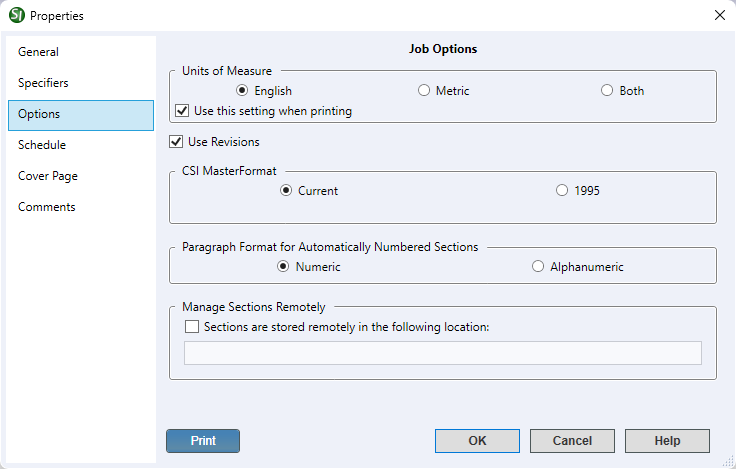
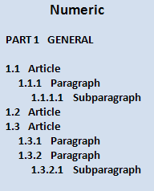

This command can also be executed from the SpecsIntact Explorer's Toolbar or Right-click menu.
The Options tab provides the flexibility to refine and update any pertinent information related to the selected Job or Master. This ensures that all details remain current throughout the project lifecycle, after the initial creation. This includes the Units of Measure (English, Metric, or Both) with the options to Use this setting when printing, enable Use Revisions, configure the Paragraph Format for Automatically Numbered Sections (Numeric or Alphanumeric), and the option to Manage Sections Remotely.
 The options available on the Options tab are global settings that remain with each Job or Master and control the settings within the SI Editor.
The options available on the Options tab are global settings that remain with each Job or Master and control the settings within the SI Editor.
 The available options in SpecsIntact differ between Jobs and Masters, reflecting their distinct purposes and requirements.
The available options in SpecsIntact differ between Jobs and Masters, reflecting their distinct purposes and requirements.
 When a Job or Master is backed up, all information from these tabs, including comments, is saved in the backup file.
When a Job or Master is backed up, all information from these tabs, including comments, is saved in the backup file.
 The SI Editor's Edit menu provides more in-depth information about the use of Revisions.
The SI Editor's Edit menu provides more in-depth information about the use of Revisions.
 Click the tabbed commands on the image below to see how to use each function.
Click the tabbed commands on the image below to see how to use each function.

- Units of Measure - Initially, Jobs default to English units, and Masters default to Both. Though English units are the most commonly used measurement for government projects, you have the flexibility to switch to Metric or Both, depending on your particular Job or Master.
- Use this setting when printing - This option is selected by default and should remain checked if you wish for this setting to be applied to the printed output.
- Use Revisions - This option ensures that the Revisions functionality in the SI Editor is automatically enabled by default during all editing sessions. This provides immediate and continuous tracking of changes to your Sections without requiring you to manually turn the feature on each time.
- CSI MasterFormat - Defaults to using the current CSI MasterFormat. For legacy projects, the option to use CSI MasterFormat 1995 remains available. To ensure seamless operation with legacy data, the system implements backward compatibility using the legacy CSI MasterFormat to accurately display the correct version.
- Paragraph Format for Automatically Numbered Sections - The Automatic Paragraph Numbering feature allows you to select between Numeric and Alphanumeric numbering schemes for your project. By default, all new Jobs and Masters are set to use the Numeric numbering scheme, as this is the standard for all government projects.
- Manage Sections Remotely - This feature supports third-party file management applications and should be used with caution. When you select the option Sections are stored remotely in the following location and enter the file path, SpecsIntact no longer manages the files and will offer to open the files from the designated location. When this feature is active, files will no longer appear in the SpecsIntact Explorer, and the Process and Print/Publish functions will become unavailable.
- Print button - Opens the Project Properties Report that displays an all-inclusive export of your project's data, compiling information from each tab into one cohesive document. It offers a detailed summary of the entire project, making it ideal for sharing with your project team to support design review meetings.
Examples
 Numeric Automatic Numbering Format:
Numeric Automatic Numbering Format:

 Alphanumeric Automatic Numbering Format:
Alphanumeric Automatic Numbering Format:

Standard Windows Commands
 The OK button will execute and save the selections made.
The OK button will execute and save the selections made.
 The Cancel button will close the dialog box without recording any selections or changes entered.
The Cancel button will close the dialog box without recording any selections or changes entered.
 The Help button will open the Help Topic for this dialog box.
The Help button will open the Help Topic for this dialog box.